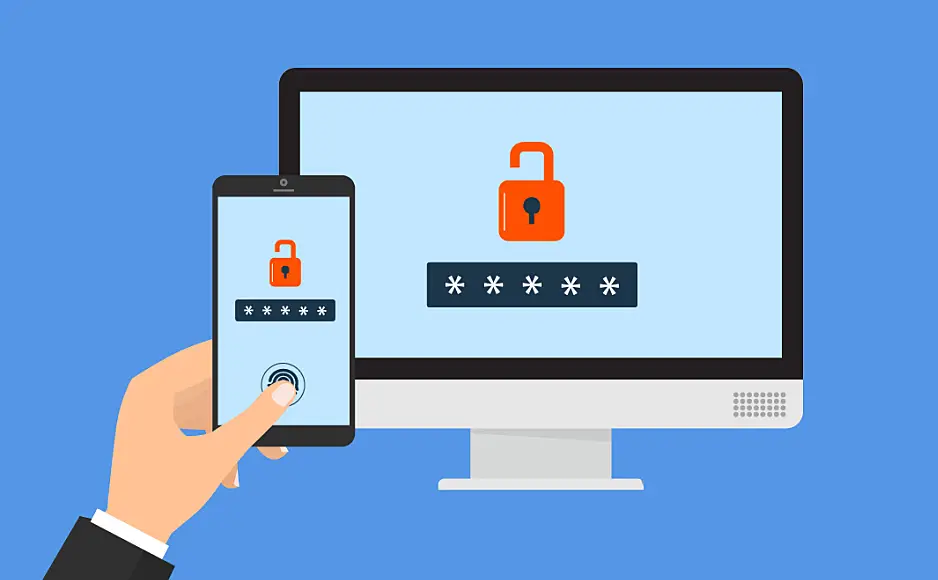

Door digitale technologieën is het functioneren van onze maatschappij veranderd. Het heeft ook invloed op hoe wij leven. Er ontstaan iedere dag nieuwe mogelijkheden om te werken, te ontspannen en om met elkaar contact te hebben. Er worden veel persoonlijke gegevens verzameld bij het gebruik van digitale technologieën. Zo heeft iedereen zijn eigen digitale identiteit. Helaas wordt de digitale veiligheid op allerlei manieren bedreigd. Aanvallers proberen door zwakheden in de beveiliging onze digitale gegevens te stelen. Het is net een kat- en muisspel tussen aanvallers en verdedigers. Op deze website leest u alles over digitale veiligheid, bedreigingen, aanvallers en verdedigers en wat voor maatregelen u zelf kunt nemen.
Digitale Beveiliging en identiteit
Digitale technologieën veranderen hoe we leven, werken en communiceren. We laten overal digitale sporen achter, zoals op sociale media, bankwebsites en schoolwebsites. Bescherming van deze gegevens is belangrijk omdat criminelen, overheden of zelfs bekenden er misbruik van kunnen maken. Digitale beveiliging draait om alle manieren voor het beschermen van je gegevens: Het gaat erom dat je informatie privé houdt, voorkomt dat die verandert zonder jouw toestemming, en altijd beschikbaar is wanneer je die nodig hebt. Iedereen, van ontwikkelaars tot individuen, is verantwoordelijk voor de beveiliging van persoonlijke gegevens door bijvoorbeeld sterke wachtwoorden te gebruiken en toegangscodes op apparaten in te stellen. Het beschermen van onze digitale gegevens gaat vooral over deze drie aspecten:

Bedreigingen
De digitale veiligheid van gebruikers online wordt op allerlei manieren bedreigd. Aanvallers zoeken naar manieren om toegang tot gegevens te krijgen en die te gebruiken. Ze maken gebruik van de 3 verschillende soorten zwakheden:
Zwakheden in de architectuur;
Zwakheden in communicatie;
Zwakheden bij gebruikers.
Met verschilende methoden zoals encryptie, HTTPS en sterke wachtwoorden kan de gebruiker de aanvallen verdedigen.
Aanvallers en verdedigers
In de digitale wereld zijn er verschillende rollen: aanvallers en verdedigers. Verdedigers proberen steeds betere beveiliging te ontwikkelen, terwijl aanvallers juist voortdurend nieuwe manieren bedenken om door deze beveiliging te breken. Vaak worden alle aanvallers 'hackers' genoemd, terwijl er ook juist ethische hackers zijn die helpen bij het verbeteren van beveiliging door de zwakheden te vinden en melden. Niet alle hackers zijn dus internetcriminelen. Overheden kunnen gebruik maken van hacken om criminelen en terroristen op te sporen. Computercriminaliteit omvat dus verschillende soorten aanvallen en verdedigers, wat alles veel complexer maakt.
Maatregelen
Er zijn veel partijen nodig om de veiligheid van ICT-systemen goed te houden: cybersecuritybedrijven, de overheid, softwareontwikkelaars en de gebruikers. Om de veiligheid van een systeem te vergroten, kunt u veel maatregelen nemen. Deze maatregelen zijn te verdelen in 4 soorten: preventie, detectie, repressie en correctie. In de onderstaande stukjes wordt uitgelegd wat die maatregelen inhouden. U gaat ook wat lezen over wat u zelf kunt doen om uw veiligheid online te vergroten. Hierbij is ook een test te vinden over phishing en of u dat kunt herkennen.